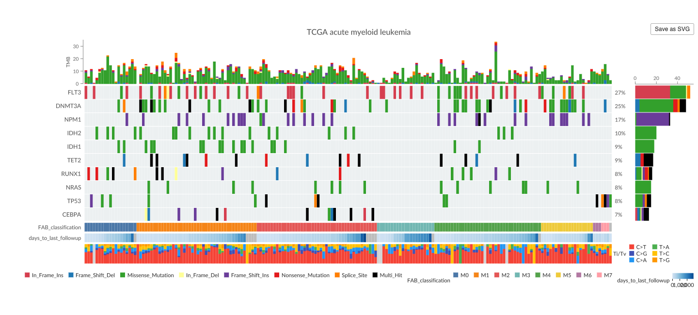

MutGlyph creates interactive cancer-genomics visualizations in R. It provides responsive counterparts to established maftools plots using the GenomeSpy interactive genomic visualization grammar, including oncoplots, protein lollipop plots, rainfall plots, and GISTIC copy-number landscapes.
MutGlyph does not call variants or replace the general analysis and data-processing functionality of maftools. Its own transformations and summaries are limited to constructing visualizations. It turns existing MAF and GISTIC objects—plus ordinary data frames where appropriate—into responsive htmlwidgets with tooltips, zooming, panning, fullscreen viewing, and PNG or SVG export.
Interaction is particularly useful for dense genomic views. Rainfall plots can move from a whole-genome overview into candidate kataegis loci, while GISTIC landscapes can zoom from chromosome-wide copy-number patterns into individual amplification or deletion peaks.

Installation
MutGlyph is under development and is not yet on CRAN or Bioconductor. Install it from GitHub with pak:
install.packages("pak")
pak::pak("genome-spy/MutGlyph")Quick start
The maftools package includes a small TCGA acute myeloid leukemia MAF:
laml <- maftools::read.maf(
maf = system.file("extdata", "tcga_laml.maf.gz", package = "maftools"),
clinicalData = system.file(
"extdata",
"tcga_laml_annot.tsv",
package = "maftools"
),
verbose = FALSE
)MutGlyph::oncoplot() deliberately follows the familiar maftools::oncoplot() API. For a common call, switching to interactive output requires only changing the namespace:
# Static plot
maftools::oncoplot(maf = laml, top = 10)
# Interactive GenomeSpy widget
MutGlyph::oncoplot(maf = laml, top = 10)Scroll or pinch over the matrix to navigate the shared sample scale and hover over marks for details. Hovering over the widget also reveals controls for fullscreen viewing, PNG or SVG image export, and downloading the generated GenomeSpy specification.
Familiar visualization APIs
MutGlyph uses established names and common argument semantics so existing visualization calls are easy to recognize and adapt. For supported common calls, they are designed as almost drop-in visualization replacements. The goal is to preserve the familiar plots while adding basic interactivity—zooming, panning, and tooltips—and cleaner, deliberately opinionated visual defaults that aim for a subjectively prettier result.
| Static maftools function | Interactive MutGlyph counterpart |
|---|---|
maftools::oncoplot() |
MutGlyph::oncoplot() |
maftools::rainfallPlot() |
MutGlyph::rainfallPlot() |
maftools::lollipopPlot() |
MutGlyph::lollipopPlot() |
maftools::lollipopPlot2() |
MutGlyph::lollipopPlot2() |
maftools::gisticChromPlot() |
MutGlyph::gisticChromPlot() |
Compatibility is semantic rather than exhaustive. MutGlyph preserves familiar inputs, meanings, and defaults where they fit an interactive visualization, but does not reproduce obscure styling or static-layout arguments that do not make sense in GenomeSpy.
Composable visualization inputs
The plotting functions accept standard maftools MAF and GISTIC objects. Protein lollipop plots additionally accept ordinary mutation tables and custom domain tables, making it straightforward to combine pre-aggregated data with local annotations or domains fetched from InterPro. Rainfall and GISTIC plots accept genomic regions, and the plot builders expose focused data-frame inputs for custom annotations and summary tracks.
Every plotting function returns an htmlwidget containing the complete GenomeSpy specification. Retrieve a portable JSON representation for inspection, versioning, or experimentation in the GenomeSpy Playground:
Documentation
- Get started with a complete first oncoplot and the shared widget controls.
- Oncoplots covers selection, clinical tracks, summaries, colors, and GISTIC calls.
- Protein lollipop plots covers single- and two-cohort plots, labels, layouts, and protein domains.
- Rainfall plots and kataegis covers mutation clustering, detected loci, and genomic regions.
- GISTIC copy-number landscapes covers chromosome-wide profiles, significance, annotations, and close zooms.
- The function reference documents every public function and data set.
Development
MutGlyph also provides a working example of embedding GenomeSpy in an R package: R code constructs the specifications, an htmlwidgets binding hosts the visualization, and a committed browser bundle supplies the runtime. Installing, using, and checking the R package therefore requires neither Node.js nor network access. When changing the browser binding or upgrading GenomeSpy, run:
Specification validation uses the JSON schema bundled with the pinned GenomeSpy development dependency. The schema is not included in the released R package.
See the installed NOTICE and JS-LICENSES files for attribution of bundled and adapted work.
AI-assisted development
OpenAI Codex was used extensively in developing MutGlyph. It assisted with researching existing solutions, prioritizing and planning features, bootstrapping the project, refining public APIs, adapting GenomeSpy example specifications for dynamic generation in R, and producing code, tests, documentation, and examples.
Development was an iterative human-in-the-loop process. The author defined the goals and constraints, evaluated alternatives, reviewed and edited changes, inspected visual output, and verified the implementation through tests. The author remains responsible for the package’s design, correctness, licensing, maintenance, and scientific use.